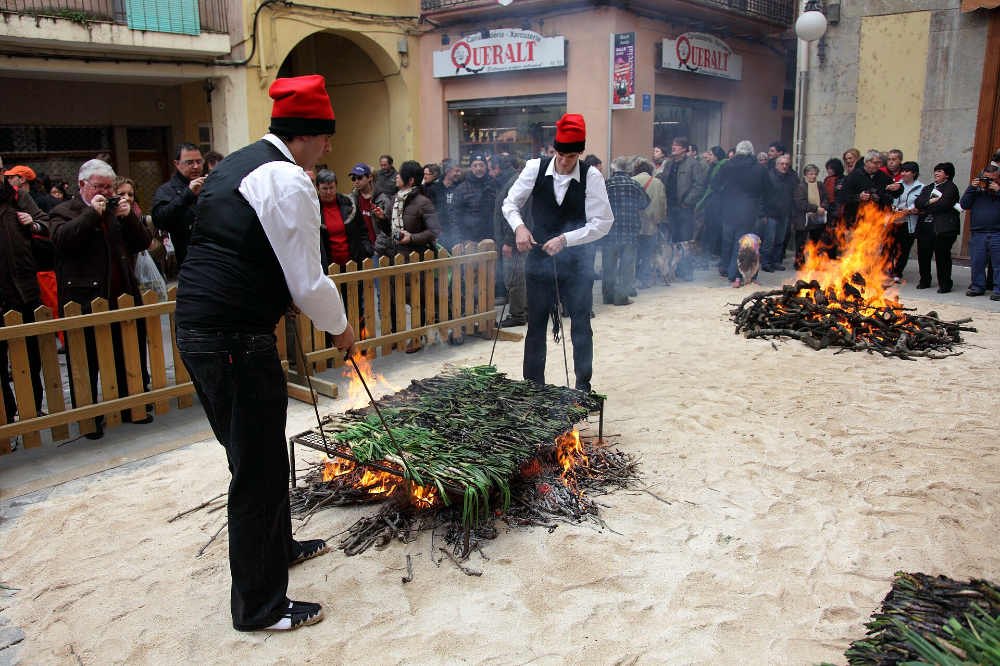
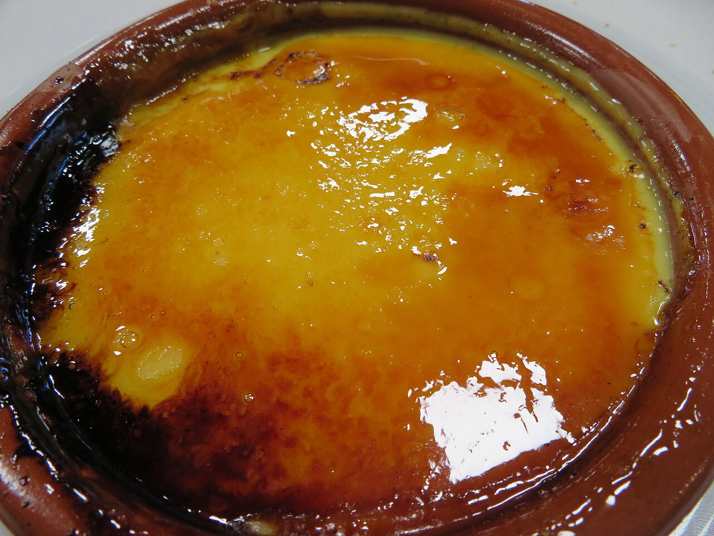

PEC 1 · Eines HTML i CSS
La cuina catalana en quatre mossegades
Receptes tradicionals amb fotos reals, vídeos i mapa d'origen: pa amb tomàquet, calçotada, crema catalana i escalivada.
Receptes destacades


D'on venen els plats
Mapa interactiu amb l'origen de les receptes amb fitxa completa.
Abans de cuinar
- Tria producte de temporada i de proximitat: tomàquet madur i oli d'oliva verge extra.
- La calçotada és de novembre a abril; fora de temporada, fes escalivada.
- Totes les fotos són reals i les fonts estan documentades a la pàgina d'enllaços.